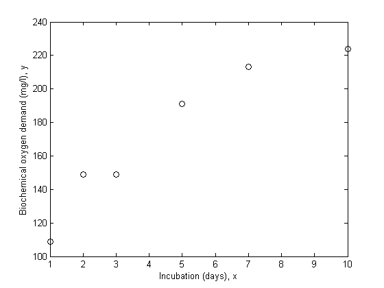
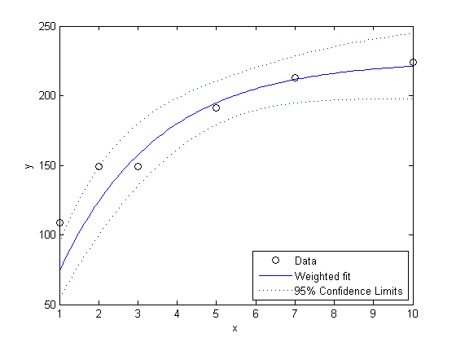
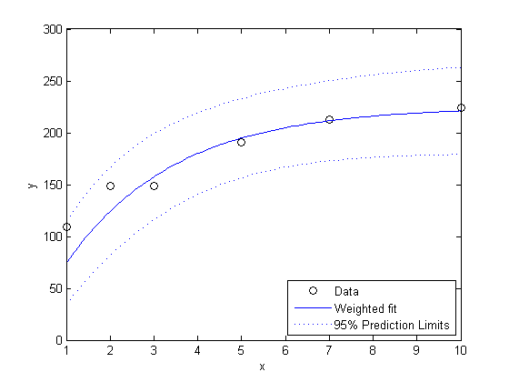
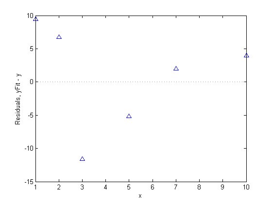
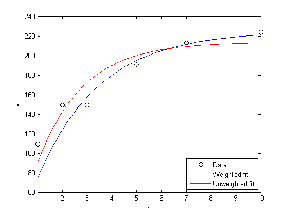

重み付き非線形回帰
Statistics Toolbox™ 関数 nlinfit で使用する非線形最小二乗アルゴリズムでは、測定誤差のすべてに同じ分散があると仮定します。その仮定が正しくない場合に重み付き近似が役に立ちます。このデモでは nlinfit を使用してそれを行う方法を示します。
目次
近似のためのデータとモデル
収集したデータを使用して、産業廃棄物と家庭廃棄物に起因する水質汚染について研究します。これらのデータは、Box, G.P., W.G. Hunter, and J.S. Hunter, Statistics for Experimenters (Wiley, 1978, pp.483-487) で詳しく説明されています。応答変数は、生化学的酸素要求量 (mg/l) で、予想変数は培養時間 (日数) です。
x = [1 2 3 5 7 10]'; y = [109 149 149 191 213 224]'; plot(x,y,'ko'); xlabel('Incubation (days), x'); ylabel('Biochemical oxygen demand (mg/l), y');
最初 2 回の観測は、残りの観測よりも低い精度で行われたことがわかっていると仮定します。たとえば、異なる器具を使用して行った場合などです。データに重みを付けるもう 1 つの理由は、記録された各観測値が実際には同じ値 x を使用して行った複数の測定の平均であるためです。ここで使用するデータでは、最初の 2 つの値が 1 回の生の測定値を表し、残りの 4 つの値がそれぞれ 5 回の生の測定値の平均であるとします。すると、各観測で使用した測定回数によって重みを付けることが適切です。
w = [1 1 5 5 5 5]';
重みの絶対スケールは、実行する近似に実際には影響せず、相対的なサイズにのみ影響します。したがって、何らかの方法でそれらを正規化することができます。y における変動を推定する目的上、重み 1 を "標準" の測定精度と考えると効果的です。この例では、重みは、観測に影響する複数の生の測定値を表しますが、当然、重みに対する複数の異なるスケーリングがあります。その 1 つは、重みの和が生の観測値の合計になるようにすることです。これは生の観測値の平均値に基づく "標準" 観測値を 1 として定義します。
mean(w)
ans =
3.6667
w = w / mean(w)
w =
0.2727
0.2727
1.3636
1.3636
1.3636
1.3636
これらのデータに近似するモデルは、x が大きくなると共に平坦になるスケーリングされた指数曲線です。
modelFun = @(b,x) b(1).*(1-exp(-b(2).*x));
ラフな視覚的近似に基づくと、点間に描画された曲線は 240 ぐらいの値 (x = 15 付近) で平らになります。したがって、240 を b1 の開始値として使用し、e^(-.5*15) は 1 に比べて小さいので、5 を b2 の開始値として使用します。
start = [240;0.5];
重みを使用したモデルの近似
重み付き近似を行うには、データおよびモデル関数の "重み付き" バージョンを定義し、続いて非線形最小二乗を使用して近似を行います。これらの "重み付き" 入力により、nlinfit は重み付きパラメーター推定を計算します。
yw = sqrt(w).*y; modelFunw = @(b,x) sqrt(w).*modelFun(b,x); [bFitw,rw,Jw,Sigmaw,msew] = nlinfit(x,yw,modelFunw,start); bFitw
bFitw =
225.1719
0.4008
この場合、推定母標準偏差は、重みまたは測定精度 1 の "標準" 観測値の平均誤差を示します。
rmsew = sqrt(msew)
rmsew = 12.5386
どのような分析でも、モデル近似の精度の推定は重要な部分です。ここでは、パラメーターの信頼区間を計算し、推定値と共に表示できます。
bCIw = nlparci(bFitw,rw,'cov',Sigmaw)
bCIw =
195.4650 254.8788
0.2223 0.5793
代わりに、パラメーター推定の近似共分散行列を使用して、パラメーターの推定標準誤差を直接計算することもできます。
seFitw = sqrt(diag(Sigmaw))
seFitw =
10.6996
0.0643
応答曲線の推定
次に、近似した応答値、および信頼区間の半値幅を計算します。既定の設定では、それらの幅は推定される曲線の点単位の信頼限界のためのものですが、nlpredci でも同時区間を計算できます。
xgrid = linspace(min(x),max(x),100)'; [yFitw, deltaw] = nlpredci(modelFun,xgrid,bFitw,rw,'cov',Sigmaw); plot(x,y,'ko', xgrid,yFitw,'b-',xgrid,yFitw+deltaw,'b:',xgrid,yFitw-deltaw,'b:'); xlabel('x');ylabel('y'); legend({'Data', 'Weighted fit', '95% Confidence Limits'},'location','SouthEast');
曲部では、重みを減らした 2 つの点は、残りの点ほど正確に近似されないことに注意してください。つまり、重み付き近似には期待されるほどの効果がないということです。
nlpredci を使用して、指定値 x で将来の観測の予測区間を推定することもできます。それらの区間では、重みまたは測定精度は 1 と見なされます。
[yFitw, deltaw] = nlpredci(modelFun,xgrid,bFitw,rw,'cov',Sigmaw,'predopt','observation'); plot(x,y,'ko', xgrid,yFitw,'b-',xgrid,yFitw+deltaw,'b:',xgrid,yFitw-deltaw,'b:'); xlabel('x');ylabel('y'); legend({'Data', 'Weighted fit', '95% Prediction Limits'},'location','SouthEast');
これらの区間を使用した将来の観測の予測には、1 を "標準" 精度としてそれらの観測の測定精度を仮定することが必要になります。上図の予測区間幅は、異なる精度を考慮してスケーリングしなければなりません。たとえば、3 番目の観測の重複観測の予測区間は次のとおりです。
[yFitw3, deltaw3] = nlpredci(modelFun,x(3),bFitw,rw,'cov',Sigmaw);
predInt3 = yFitw3 + [-1 1] * deltaw3/sqrt(w(3))
predInt3 = 138.3388 176.6801
残差解析
データと近似のプロットに加え、予測子に対する近似からの残差もプロットし、モデルの問題を診断します。残差は、独立同一分布で表示されます。重みのため、プロットの解釈を簡単にするために残差をスケーリングしなければなりません。
plot(x,rw.*sqrt(w),'b^'); if feature('HGUsingMATLABClasses') hy = specgraphhelper('createConstantLineUsingMATLABClasses',... 'LineStyle',':','Color',[.5 .5 .5],'Parent',gca); hy.Value = 0; else graph2d.constantline(0,'linestyle',':','color',[.5 .5 .5]); end xlabel('x'); ylabel('Residuals, yFit - y');
この残差プロットには、系統的なパターンが見られます。最後の 4 つの残差に線形の傾向があることに注意してください。この線形の傾向とは、モデルが x の増大するスピードほど速く増大しないことを示しています。さらに、残差の振幅は x の増大と共に減少します。これは、測定誤差が x によって異なる可能性があることを示しています。これらは、調査する価値がありますが、データ点が少なすぎるため、これらのパターンを重要視することは困難です。
重みを使用しないモデルの近似
重みの影響を確認するには、重みなしの近似と比較します。
[bFit,r,J,Sigma,mse] = nlinfit(x,y,modelFun,start); [yFit,delta] = nlpredci(modelFun,xgrid,bFit,r,'cov',Sigma); plot(x,y,'ko', xgrid,yFitw,'b-',xgrid,yFit,'r-'); legend({'Data', 'Weighted fit', 'Unweighted fit'},'location','SouthEast'); xlabel('x');ylabel('y');
重み付き近似は、それより小さい重みを持つ 2 点によって受ける影響が少なく、その結果として、残りの点の近似がより正確になります。これら 2 つの近似の違いは、推定された母標準偏差にも見られます。
rmse = sqrt(mse); [rmse rmsew]
ans = 17.0881 12.5386
重み付き推定は約 25% 小さくなるので、重み付き近似の方が優れているかのように見えますが、2 つの推定には若干異なる解釈があります。両方の推定は、標準偏差に関連して "代表的" な測定の変動を表します。しかし、重み付き近似では、測定には異なる精度があります。精度の高い観測の標準偏差の推定は次のとおりです。
rmsew/sqrt(w(3))
ans = 10.7374
これは、"グローバル" な重みなし標準偏差推定よりもはるかに小さくなります。一方、精度の低い観測の推定は次のとおりです。
rmsew/sqrt(w(1))
ans = 24.0096
これは、重みなしの推定よりも大きくなります。
重みが正しい相対測定精度であることがわかっている場合は、これは理に適っています。重みがわかっていない場合、重み付き近似は、近似に対するそれらの 2 つの点の影響を確認するために役立つ練習になりますが、重みに対する正当な理由なしには、適切な近似として使用することはできないでしょう。